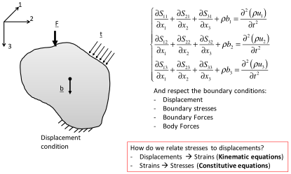
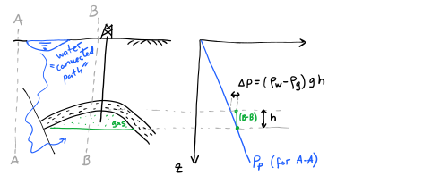
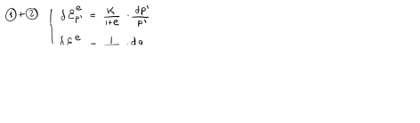
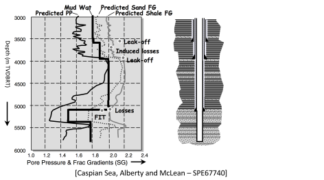
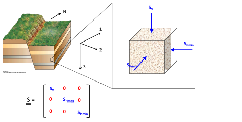
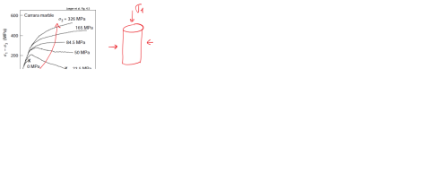
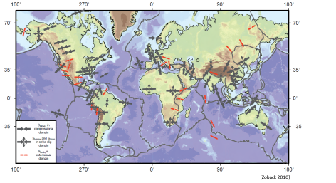

Next: 3.2 Kinematic equations: displacements Up: 3. Fundamentals of Linear Previous: 3. Fundamentals of Linear Contents
Consider a 3D space with a given right-handed orthogonal coordinate system , , in directions 1, 2 and 3 (Figure 3.1). In a right-handed coordinate system, the first element of the base is your index finger, the second element of the base is your middle finger, and the third element of the base is your thumb (all in your right hand).
The number that represents the value of a scalar (such as temperature or pore pressure ) at a given point is independent of the coordinate system orientation and origin. However, the numbers that represent the value of a vector (such as velocity or force ) or a tensor depend on the coordinate system. A tensor, like stress, also depends on the coordinate system used to express its numerical values. Read the values as the stress on face perpendicular to base vector in the direction of base vector . is positive if after a displacement , points in opposite direction to (Figure 3.1).
All stresses can be written as a matrix (Figure 3.1). The diagonal terms correspond to normal stresses. The off-diagonal terms correspond to shear stresses. Off-diagonal stresses are symmetric () because of angular momentum equilibrium (the element does not spin around any axis). Hence, the stress tensor is symmetric with respect to the diagonal (top-left to bottom-right).
Since the stress tensor is symmetric and is composed by all real numbers, there exist 3 real-valued eigenvalues that we call principal stresses and denote . Each principal stress (eigenvalue) is associated with a principal direction (eigenvector). Principal directions are always perpendicular to each other in a cartesian coordinate system. When we write the stress tensor in the coordinate system aligned with directions of the principal stresses, the stress tensor results in diagonal elements populated by the principal stresses and zeros in the off-diagonal places. Usually, the principal stresses are ordered from top to bottom starting with  at the top (Figure 3.2).
Equilibrium of stresses requires summation of forces in all directions to be zero when the object is not moving (no acceleration , thus ). Consider the schematic in Figure 3.3. Summation of forces in direction 1, where the term is the body force component, proportional to the solid mass density  and volume , and the acceleration component , requires
|  |
which eventually reduces to the following equation when canceling terms and dividing by the element volume 
 |
(3.1) |
A generalization of equilibrium in all directions with all stresses (Figure 3.1) yields the Cauchy's equilibrium equations:
Consider a half-space where the surface coincides with the origin of the coordinate system and gravity points in direction 3, hence in Eq. 3.2. We assume infinite extension in directions 1 and 2, therefore there are no variations in directions 1 and 2, such that . Notice there are 6 unknowns and 3 equations in Eq. 3.2 (remember ). The only equation we can solve is the third one. Integration of the third equation yields the (vertical) stress ,
| (3.3) |
equivalent to Eq. 2.11.
You may wonder “what about  and ?
The horizontal stresses cannot be determined with the current equations.
The solution to this problem will be developed in section 3.3.4.
and ?
The horizontal stresses cannot be determined with the current equations.
The solution to this problem will be developed in section 3.3.4.
Figure 3.5 shows an example of an arbitrary shaped continuous solid subjected to external stresses , external forces , body forces , and displacement constraints (bottom fixture). As highlighted before, notice that there are 6 unknowns (9 unknowns if displacements are included) and 3 equations in Cauchy's equations of equilibrium (Eq. 3.2). The solution of a general problem with arbitrary boundary conditions requires more equations to have a determined problem (as many equations as unknowns). The solution of such problem requires knowledge of the material properties. We need equations that relate displacement to stresses. These equations divide in two types: